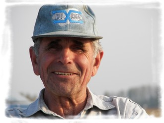

Hírek, Aktualitások

Tisztújító Közgyűlés
A Szentesi Repülőklub 2023. október 15-én tartotta meg
elnökségi tisztújító közgyűlését.

Új világrekord
2023. november 7-én minden bizonnyal új távolsági
világrekord született vitorlázórepülésben.

Pálya karbantartás
2023. őszén végre megújul repterünk felszállópályája.

Sikeres szakszó vizsga
2023. október 09-én Molnár Imre klubtársunk is sikeresen
teljesítette a vitorlázórepülő szakszolgálati engedély
gyakorlati vizsgát.

HA-4061
Célegyenesben a klub PW-5 típusú vitorlázógépének
légialkalmassága.
Új Világrekord
Pálya karban- tartás
Sikeres szakszó vizsga
HA-4061
Tisztújító Közgyűlés
Tisztújító Közgyűlés
2023. október 15.
A Szentesi Repülőklub 2023. október 15-én 10 órai kezdettel
tartotta meg elnökségi tisztújító közgyűlését. Az öt fős elnökség
újraválasztására az öt éves mandátumok lejárta miatt került sor. A
közgyűlésen a tagok az elkövetkező öt éves időtartamra egyhangúlag
az alábbi elnökséget választották meg:
- Elnök: Szőke Tibor
- Titkár: Oswald András
- Elnökségi tag: Vigh Mátyás
- Elnökségi tag: Bélteki Ferenc
- Elnökségi tag: Vecsei Balázs
A tisztújítás mellett szó esett az egyesület rövid és hosszú távú
terveiről, nagy értékű beszerzésekről, a helyi turisztikai
fejlesztésekhez való kapcsolódási lehetőségekről és az augusztus
05-ei I. Szentesi Traktoros Fesztivál tapasztalatairól is.
Új világrekord
2023. november 07.
Az Egyesült Államok-beli Minden-Tahoe Airport-ról indulva 2023.
november 07-én Gordon Boettger és Bruce Campbell Arcus J típusú
vitorlázógépükkel 3.143km-es távrepülést teljesített. A 18,5 órás
repülést a Sziklás-hegység feletti hullámban teljesítették,
amelyből 11 óra éjszakai sötétségben zajlott. A két pilóta ezzel a
repüléssel minden bizonnyal megdöntötte a Klaus Ohlmann 2003-as
világrekordját, amelyet egy 3.009 km hosszú távrepüléssel állított
fel. A repülésről szóló poszt
jelen linken
érhető el. A repülés részletes adatai a
WeGlide oldalon.
Pálya karbantartás
2023. ősz
2023. őszén végre megújul repterünk felszállópályája. Az egyesület
Duna Aszfalt Zrt.-vel kötött megállapodása értelmében az orosházi
út felújítása során kitermelt termőföld felhasználásával a reptér
felszállópályáján és gurulóútján sík, megemelt szintű felületet
alakítanak ki. A pálya karbantartás eredményeképpen jelentősen
javul a reptéri pálya minősége és lecsökken a belvizesedés esélye.
Sikeres szakszó vizsga
2023. október 09.
2023. október 09-én Molnár Imre klubtársunk is sikeresen
teljesítette a vitorlázórepülő szakszolgálati engedély gyakorlati
vizsgát. Vecsei Balázs után immár ő a második pilóta a klubban,
aki idén szakszót szerez. Gratulálunk! Jöhetnek a típusvizsgák és
a távrepülések!
HA-4061
2023. ősz
Célegyenesben a klub PW-5 típusú vitorlázógépének
légialkalmassága.
A szentesi repülésről
A Szentesi Repülőklub
A régmúltban gyökerező, nagy hagyományokon alapuló szentesi
repülés hosszú kényszerszünet után, 1990-ben szerveződött újjá. A
Szentesi Repülőklubot életre hívó lelkes alapítókat az a nemes cél
vezette, hogy a térségben újra megteremtsék a sportrepülés
lehetőségét. Áldozatos, társadalmi összefogással segített
munkájukra az 1993. június 19-én szervezett nagyszabású repülőnap
és hangáravató tette fel a koronát.
Ezen jeles dátumtól a mai napig a sportrepülés folyamatosan és
egyre aktívabban van jelen Szentesen. Tagjaink hitvallása, hogy
minél több emberrel, minél több fiatallal ismertessük és
szeretessük meg a számunkra legkivételesebb élményt, a repülést.
A szentesi repülés kezdeti korszakáról és a Szentesi Repülőklub
megalakulása előtti időszakról bővebben az alábbi linken
olvashatsz:
Pusztai János: A szentesi repülés rövid története
A Szentesi Repülőklub szervezete
A repülőklub legfőbb döntéshozó szerve a Közgyűlés. A Közgyűlésben
az egyesület minden tagja szavazati joggal bír. A Közgyűlést az
egyesület elnöke hívja össze.
A repülőklub ügyvezető szerve az Elnökség. Az egyesület
alapszabálya és a Közgyűlés határozatai által megszabott
keretszabályok betartásával az Elnökség irányítja az egyesület
tevékenységét. Az Elnökséget a Közgyűlés választja az egyesület
tagjaiból.
Az Elnökséget jelenleg az alábbi öt fő alkotja:
- Elnök: Szőke Tibor
- Titkár: Oswald András
- Elnökségi tag: Vigh Mátyás
- Elnökségi tag: Bélteki Ferenc
- Elnökségi tag: Vecsei Balázs
A repülőklub keretében a következő szakosztályok működnek:
- Vitorlázórepülő szakosztály
- Motoros-vitorlázórepülő szakosztály
- Sárkányrepülő szakosztály
- Modellező szakosztály
A szentesi repülőtér
A szentesi repülőtér Szentes városától délre 5 kilométerre,
közvetlenül a Szentest Hódmezővásárhellyel összekötő 45-ös főút
mellet fekszik. Kedvező elhelyezkedése következtében könnyen
megközelíthető.
A repülőtér főbb adatai az alábbiak:
| Név |
Szentesi repülőtér |
| ICAO kód |
LHSZ |
| Kategória |
Nem nyilvános repülőtér |
| Koordináták |
N463642 E201659 |
| Tengerszint feletti magasság |
84 m |
| Rádió hívójel |
Szentes Info |
| Rádiófrekvencia |
123.81 MHz |
| Pályairány |
15 dél-délkelet/33 észak-északnyugat |
| Pálya hossza |
750 m |
| Pálya szélessége |
50 m |
| Pálya talaja |
füves |
| Forgalmi kör |
33-as felszállási irányból bal, 15-ös felszállási irányból
jobb
|
| Megjegyzések |
1. Csak nappali VFR repülés folytatható 2. AFIS szolgálat csak
előzetes bejelentésre 3. A repülőtér kizárólag a tulajdonos
vagy üzembentartó engedélyével, vagy kényszerhelyzetben
használható
|
| Figyelmeztetés |
35-ös irányban 1200 méter távolságra TV torony, 300 méteres
körben minimális átrepülési magasság 600 méter
|
Repülőterünkről bővebben az alábbi linken is olvashatsz:
Szentesi Repülőtér - Wikipédia
Repülőgépeink
Repülőterünk jelenleg az alábbi egyesületi illetve
magántulajdonban lévő motoros, motoros-vitorlázó és vitorlázó
repülőgépek bázisául szolgál:
HA-5374
R-26S Góbé
Egyesületi tulajdon

HA-5520
R-26SU Góbé
Egyesületi tulajdon

HA-4380
SZD-30 Pirat
Magántulajdon

HA-4252
SZD-32A Foka5
Magántulajdon

HA-4254
SZD-32A Foka5
Magántulajdon

HA-4061
PW-5 Smyk
Egyesületi tulajdon

D-0083
Rolladen-Schneider LS-3
Magántulajdon

HA-1202
Scheibe SF-25C Falke
Magántulajdon

D-KOEN
Scheibe SF-25C Falke
Magántulajdon

HA-1269
Scheibe SF-25C Falke
Magántulajdon

D-KDTB
Grob G109
Magántulajdon

HA-MBA
Antonov An-2
Magántulajdon

Akik már nem lehetnek közöttünk
- Batta Sándor
- vitorlázórepülő oktató
- motoros repülő
- vontatópilóta
- a szentesi régi repülőtér egykori parancsnoka
- A Szentesi Repülőklub tiszteletbeli tagja
- Elhunyt 2006-ban
- Gullay Mihály
- vitorlázórepülő oktató
- II. világháborús vadászrepülő
- A Szentesi Repülőklub alapító tagja
- Elhunyt 2011-ben
- Rákász János
- vitorlázórepülő
- A Szentesi Repülőklub egykori titkára
- Elhunyt 2016-ban

- Hári László
- vitorlázórepülő
- motoros repülő
- vontatópilóta
- A Szentesi Repülőklub egykori elnöke
- A Szentesi Repülőklub alapító tagja
- Elhunyt 2018-ban
Rendezvények
Szentesi Reptéri Családi Nap
A Szentesi Repülőklub legnagyobb hagyománnyal bíró rendezvénye.
Első alkalommal 2009. augusztus 20-án rendeztük meg, majd 2014-ig
minden évben ezen a napon került megszervezésre. 2016-ban hetedik
majd utoljára 2021-ben nyolcadik alkalommal tartottunk ilyen
rendezvényt.
A reptéri családi nap keretében a repülőklub és a klubtagok
tulajdonában lévő gépekkel illetve vendég repülőgépekkel is
biztosítottunk élményrepülési lehetőséget. 2021. évi
rendezvényünkön a vendégeink már oldtimer kétfedelű motoros és
vitorlázó repülőgépekkel is repülhettek. A feltételek megléte
esetén ejtőernyős tandemugrásra is volt lehetősége a rendezvényre
látogatóknak.
Az élménydús légi programok mellett igyekeztünk földi programokban
is jeleskedni. A repülőklub modellező szakosztálya minden
alkalommal tartott repülőmodell bemutatókat, és eseti jelleggel
volt hagyományőrző bemutató, ugarálóvár, terápiás kutya program
illetve airsoft bemutató is. 2021-ben pedig a Magyar Honvédség
haditechnikai bemutatóval és toborzóponttal emelte a rendezvény
színvonalát.
A Szentesi Reptéri Családi Nap 2021. FB oldala
Szentesi Reptéri Családi Nap 2021. beharangozó riport a Szentes
TV-ben
Szentesi Reptéri Családi Nap 2021. beszámoló a Szentes TV-ben
A Szentesi Élet városi hetilap bejegyzése a 2021-es
rendezvényről
A Szentesi Mozaik portál bejegyzése a 2021-es rendezvényről
Szentesi Reptéri Majális
2022. május 14-én rendeztük meg a korábbi reptéri családi napokhoz
hasonló rendezvényt. Fókuszban itt is a sétarepülési lehetőség
biztosítása állt, a látogatók azonban ez alkalommal színvonalas
autogiro, oldtimer repülőgép és katonai helikopter bemutató
repülést is megtekinthettek.
A földi programokban is sikerült előrelépni a korábbi
rendezvényekhez képest. Volt lehetőség pónilovaglásra,
állatsimogató, ugarálóvár, airsoft bemutató, haditechnikai
bemutató és toborzópont illetve számos árus és többféle streetfood
stand várta a látogatókat.
A Szentesi Reptéri Majális 2022. FB oldala
Szentesi Reptéri Majális 2022. beharangozó riport a Csongrád
TV-ben
Szentesi Reptéri Majális 2022. beharangozó bejegyzés a Szentes
Élet-ben
Szentesi Reptéri Majális 2022. beszámoló a Szentes TV-ben
A Szentesi Élet városi hetilap bejegyzése a rendezvényről
A Szentesi Gyors portál bejegyzése a rendezvényről
I. Szentesi Traktoros Fesztivál
2023. augusztus 05-én a szentesi repülőtér szolgált az I. Szentesi
Traktoros Fesztivál helyszínéül. A Szentesi Repülőklub csatlakozva
a rendezvényhez többféle saját és vendég repülőgéppel biztosított
sétarepülési lehetőséget.
Az I. Szentesi Tarktoros Fesztivál FB oldala
I. Szentesi Tarktoros Fesztivál beszámoló a Szentes TV-ben
A Szentesi Mozaik portál bejegyzése a rendezvényről
Gyengénlátók repülése
2023. augusztus 07-én első alkalommal fogadhattuk a Vakok és
Gyengénlátók Csongrád-Csanád Megyei Egyesületének (VAGYCSOME)
tagjait repterünkön. Látássérült látogatóink a szegedi
sárkányrepülésüket követően a klubunkat tisztelték meg azzal, hogy
a vitorlázórepülést kipróbálják. A program olyan sikeres volt,
hogy 2022. szeptemberben és 2023. júliusban is visszatértek
hozzánk.
A gyengénlátók 2022. augusztusi repüléséről beszámoló a Szentes
TV-ben
A VAGYCSOME videója a 2022. augusztusi látogatásról
A VAGYCSOME bejegyzése a 2022. augusztusi látogatásról
A VAGYCSOME bejegyzése a 2022. szeptemberi látogatásról
A VAGYCSOME bejegyzése a 2022. szeptemberi látogatásról
A VAGYCSOME bejegyzése a 2023. júliusi látogatásról
Szolgáltatások
Élményrepülés
A Szentesi Repülőklub pilóta növendék toborzási célból nem
kereskedelmi jelleggel végez élményrepülési szolgáltatást. A
repülés az egyesület és a klubtagok tulajdonát képező kétüléses
repülőgépekkel lehetséges, így egyszerre csak a pilóta +1 fő utas
repülhet. Élményrepülést az alábbi típusokkal vállalunk:

R-26S Góbé
Vitorlázórepülés csőrlésből a magyar tervezésű és gyártású
R-26S Góbé kiképző repülőgéppel. Az utas alapesetben a
vitorlázógép első ülésében foglal helyet, ahonnan kiváló
kilátás nyílik szinte minden irányba. A gépet egy
csőrlőaggregátor intenzív emelkedéssel nagyjából 300 méter
magasságba emeli. A csölrőkötél leoldását követően a hajtómű
nélküli repülőgép szinte teljes csendben egy nagyjából öt
perces iskolakört ír le a repülőtér felett, majd leszáll. A
vitorlázó élményrepülést elsősorban az intenzívebb repülési
élményt keresőknek ajánljuk.
SF-25C Falke
Élményrepülés a német tervezésű és gyártású SF-25C Falke
motoros-vitorlázógéppel. Az utas alapesetben a repülőgép jobb
ülésében foglal helyet. A gép önerőből száll fel és
biztonságos magasságban a légtérkorlátozások betartásával az
utassal egyeztetett útvonalat repül le. A motoros vitorlázó
élményrepülés kevésbé intenzív, inkább túra jellegű repülés,
amely keretében a környékbeli települések és látnivalók
tekinthetőek meg a magasból.
Az élményrepüléssel kapcsolatos további tudnivalók
Az utas magassága
Az élményrepülésre használt repülőgépeink pilótafülkéiben igen
korlátozott a férőhely. Általánosságban azt mondhatjuk, hogy
190 cm utas testmagasság felett a repülés kényelmetlenné vagy
akár lehetetlenné is válhat, amennyiben a kabintető nem
zárható rendesen. A fentiek miatt az ennél magasabb utasok
repültetését kizárólag a pilóta egyedi elbírálása alapján
vállaljuk.
Az utas testsúlya
Az élményrepülésre használt repülőgépeink terhelhetősége is
erősen korlátozott. Ráadásul a repülőgépeknél a súlypont
helyzete is jelentősen befolyásolja a repülési jellemzőket.
Általánosságban az mondható, hogy a legfeljebb 110 kg
testsúlyú utasok minden gond nélkül repülhetnek. Az ennél
nagyobb testsúlyú utasok repültetését kizárólag a pilóta
egyedi elbírálása alapján vállaljuk.
Az utas éltekora
Az élményrepülés során a repülőgépek kezelőszervei az utas
részéről is ugyanúgy elérhetőek, így egy felelőtlen vagy
véleltlen mozdulat a kezelőszerveknél akár komolyabb repülési
problémákhoz is vezethet. A fentiek miatt 10 év alatti gyermek
utasok repültetését kizárólag a pilóta egyedi elbírálása
alapján vállaljuk.
Pilótaképzés
A Szentesi Repülőklub alapvetően vitorlázó pilóta képzést, egyedi
esetben könnyűrepülő pilóta képzést vállal. Mindkét fajta képzés a
Magyar Vitorlázórepülő Szövetség Képzési Szervezete keretében az
ott kidolgozott és alkalmazott kiképzési tematika szerint végzi. A
kiképzés klub rendszerben történik, azaz a pilótanövendék az
egyesület tagjává válik, és aktívan részt vesz a klub mindennapi
életében, a repülőüzem működtetésében.
A vitorlázórepülő pilóta képzés a SPL (Soaring Pilot Licence -
Vitorlázórepülő Pilóta Szakszolgálati Engedély) megszerzésére
irányul. A vitorlázórepülő képzésről részletesebben az alábbi
linken található tájékoztatóban olvashatsz:
SPL képzési tájékoztató
A könnyűrepülő pilóta képzés a LAPL (Light Aircraft Pilot
Licence - Könnyű Repülőgép Pilóta Szakszolgálati Engedély)
megszerzésére irányul. A könnyűrepülő képzésről részletesebben
az alábbi linken található tájékoztatóban olvashatsz:
LAPL képzési tájékoztató